CMS
User Manual
A step-by-step guide to running the Corporate DNA website content — written for everyone, no technical background needed.
For Editors
For Admins
Welcome
This manual teaches you how to run the Corporate DNA website content on your own, without a developer. It covers everything both roles do:
- Editors — create and publish content (cases, solutions, people, insights, and more).
- Admins — everything an editor does, plus manage users, languages, and the audit log.
Sections that only admins can use are marked 🔑 Admin only. If you are an editor, you can skip those — you will not see those screens.
How to read this manual. Follow it in order the first time. After that, use the contents below to jump to what you need. Every screen appears as a screenshot placeholder — a dashed red box with a precise caption telling a teammate exactly what to capture and paste in its place.
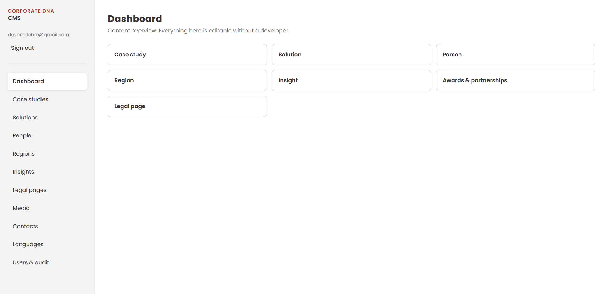
Optional: the Dashboard or a friendly product shot, to open the manual with a visual.
Table of contents
- 1Before you start: key ideas
- 2Signing in
- 3Your first sign-in (new accounts)
- 4If you get locked out
- 5Getting around the CMS
- 6The content types, explained
- 7The core workflow
- 8Understanding every field type
- 9Writing with the rich-text editor
- 10Working with images & files
- 11Version history: undo & restore
- 12Deleting content
- 13Field reference per type
- 14Ordering People
- 15Legal pages
- 16Working in more than one language
- 17Contacts: the contact-form inbox
- 18🔑 Managing users
- 19🔑 The audit log
- 20🔑 Managing languages
- 21Troubleshooting & FAQ
- 22Golden rules cheat sheet
1Before you start: key ideas in plain language
Read this once. These five ideas make everything else obvious.
| Idea | What it means |
|---|
| Draft vs. Published | A draft is your private work-in-progress — nobody visiting the public site can see it. When you publish, it goes live. You can always return to a draft by unpublishing. |
| Two roles | Editor = writes and publishes content. Admin = everything an editor does, plus manages accounts and settings. |
| Two-step login (MFA) | Every sign-in needs your password and a 6-digit code from an app on your phone. Required for everyone — it keeps the site safe. |
| Everything is versioned | Every save is kept in history. Made a mistake? Restore an older version. Nothing is ever truly lost. |
| The site updates itself | When you publish, the public website refreshes on its own within moments. You never need to "push" anything. |
2Signing in
Once your account exists (see Section 3 if this is your first time), signing in takes two quick steps.
Step 1 — Email and password
- Open the CMS address in your browser (your admin gives you the link).
- Type your Email and Password.
- Click Continue.
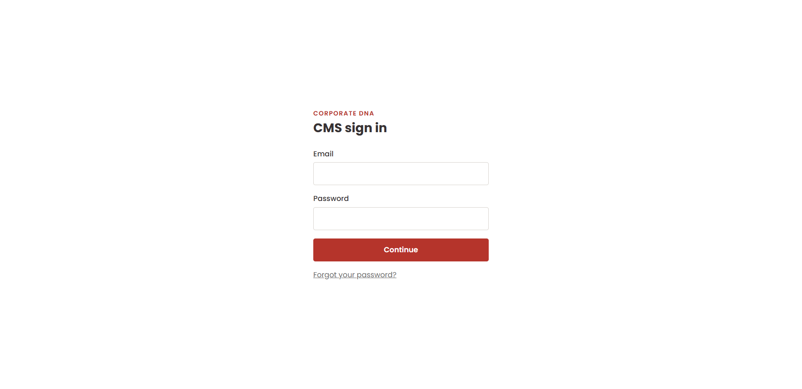
The “CMS sign in” screen: Email field, Password field, the Continue button, and the “Forgot your password?” link below it.
Step 2 — Your 6-digit code
- The screen now asks for a Verification code.
- Open your authenticator app (Google Authenticator, 1Password, Microsoft Authenticator…) and read the current 6-digit code for “Corporate DNA”.
- Type the 6 digits and click Verify.
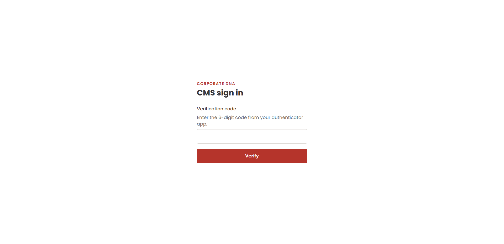
The verification screen with the “Enter the 6-digit code from your authenticator app” hint, the code box, and the Verify button.
You are now on the Dashboard. 🎉
Codes are shared across your whole office network. There is a limit of 15 code attempts per hour for the entire network, not per person. If you see a “rate-limited” message, wait — retrying makes it worse for everyone.
3Your first sign-in (new accounts)
New accounts are never created by handing someone a password. An admin sends you an email invitation, and you set up everything yourself. No one — not even an admin — ever sees your password or your codes.
A. Open the invitation email
Find the invitation email and click its link.
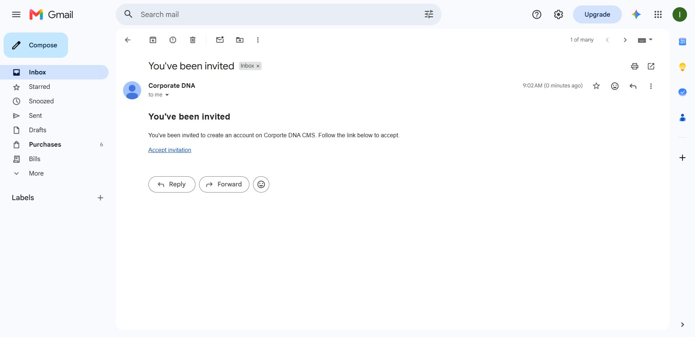
The invitation email with the “accept invite / set password” button highlighted.
B. Choose your own password
Pick a strong password and confirm it. This becomes yours alone.
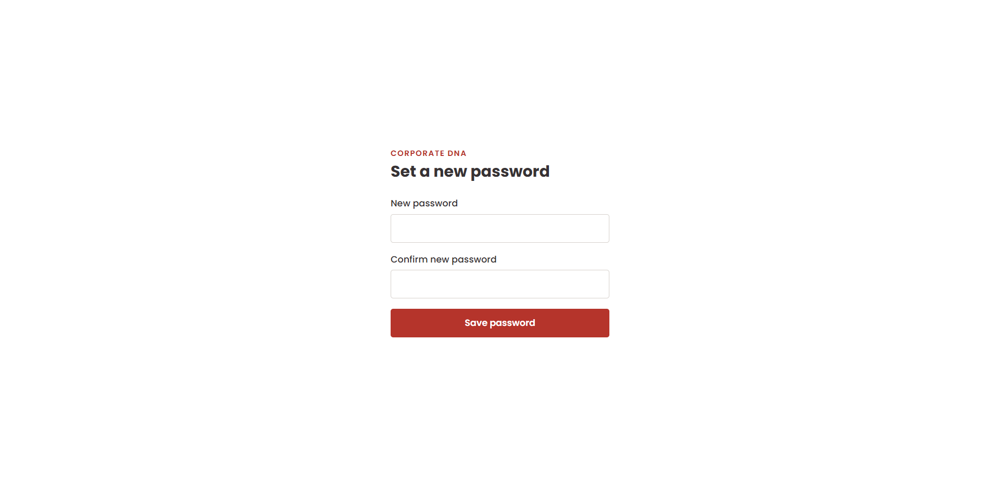
The “set your password” screen.
C. Set up your authenticator app (one-time)
- You land on “Set up your second factor”. A QR code appears.
- In your authenticator app choose “add / scan” and point the camera at the QR code.
Can't scan? Click “Can't scan? Enter a key instead” and type the setup key into your app by hand.
- Your app now shows a 6-digit code. Type it into Verification code.
- Click Finish setup.
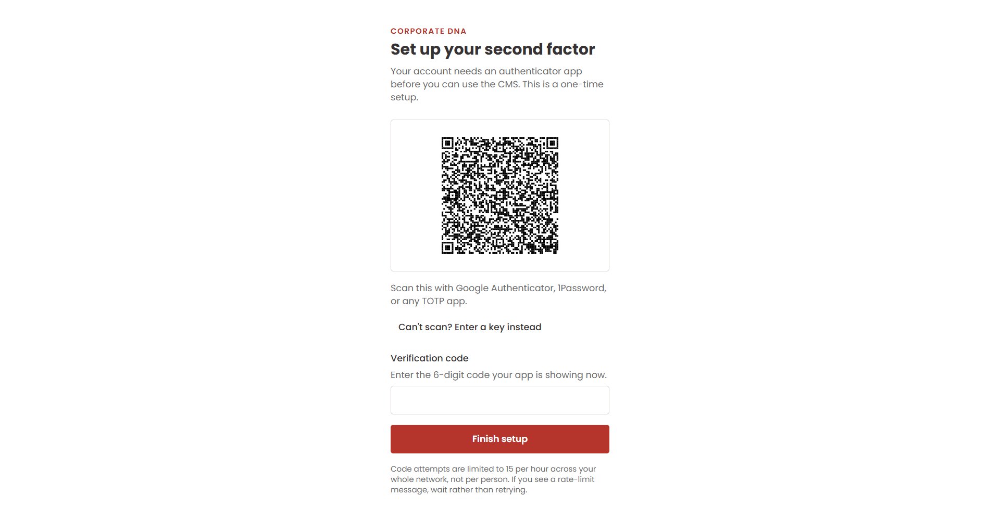
The “Set up your second factor” screen: the QR code, the “Can't scan? Enter a key instead” link, the code box, and the Finish setup button.
Until you finish this one-time setup, the CMS stays locked. That's normal and by design. Future sign-ins only need your password + a fresh code.
4If you get locked out
| Problem | What to do |
|---|
| Forgot your password | On the sign-in screen click “Forgot your password?”. A reset link arrives by email; it works once then expires. You'll still need your 6-digit code — a reset never skips the second step. |
| Lost or replaced your phone | Ask an admin to Reset your second factor (Section 18). Your next sign-in walks you through scanning a fresh QR code. |
| “Rate-limited” message | Too many code attempts across the office network. Wait (up to an hour) instead of retrying. |
| Your account was disabled | An admin turned your account off. Contact an admin to re-enable it. |
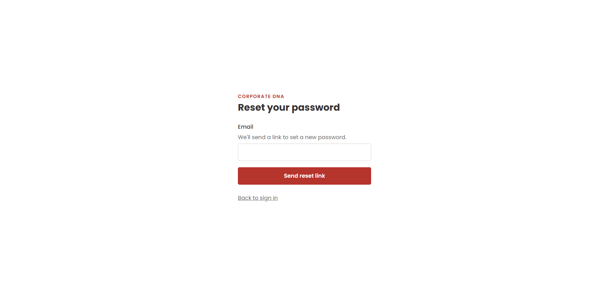
The password-recovery screen reached from the “Forgot your password?” link.
5Getting around the CMS
Every screen has the same left-hand menu. Your email shows in it, so you always know which account you're using.
| Menu item | What's inside | Who sees it |
|---|
| Dashboard | Home screen with a card per content type. | Everyone |
| Case studies | Client success stories. | Everyone |
| Solutions | Your service / solution pages. | Everyone |
| People | Team member profiles. | Everyone |
| Regions | The regions shown on the home-page world map. | Everyone |
| Insights | Articles / blog posts. | Everyone |
| Legal pages | Privacy, Cookies, Terms. | Everyone |
| Media | Library of uploaded images and files. | Everyone |
| Contacts | Messages sent through the site's contact form. | Everyone |
| Languages | Add and manage site languages. | 🔑 Admin only |
| Users & audit | Manage accounts and view the activity log. | 🔑 Admin only |
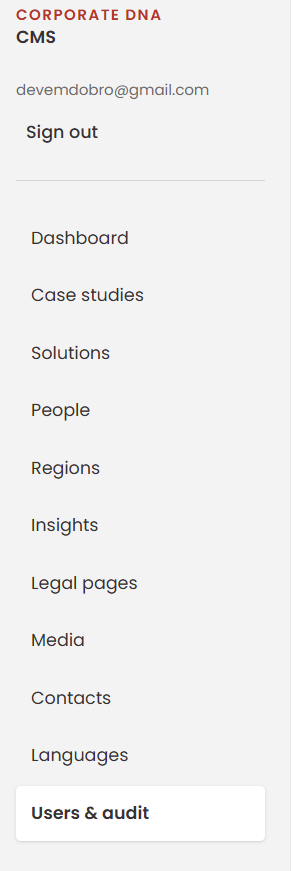
The full left navigation menu — ideally as an admin so Languages and Users & audit are visible — with your email shown.
The Dashboard shows a card for each main content type. Click any card to jump into that type's list.

The Dashboard grid of content cards (Case studies, Solutions, People, Regions, Insights, Legal pages).
6The content types, explained
There are two shapes of content.
Collections — you can have many of these
- Case studies — a client challenge, your approach, the result, a quote, cover/brand imagery, and optional video. Cases also carry facets (industry / service / region / outcome) that power the filterable library on the site.
- Solutions — the services you offer.
- People — team profiles (name, role, bio, photo, social links). These can be re-ordered by hand.
- Regions — the regions that appear on the interactive world map on the home page (this is not the site's “Offices” section).
- Insights — articles / blog posts, with author, cover image, and an optional YouTube video.
Single pages (singletons) — exactly one of each
- The Legal pages: Privacy, Cookies, and Terms.
- You edit the single entry — you never create new ones — and you reach them from Legal pages in the menu.
7The core workflow: create, save, preview, publish
This one workflow is the same for every content type. Learn it once and you can edit anything.
Step 1 — Open a type and start a new entry
- Click the type in the left menu (e.g. Insights).
- You'll see a list of existing entries. Click New (top right). If the list is empty, a New button sits in the middle under “Nothing here yet”.
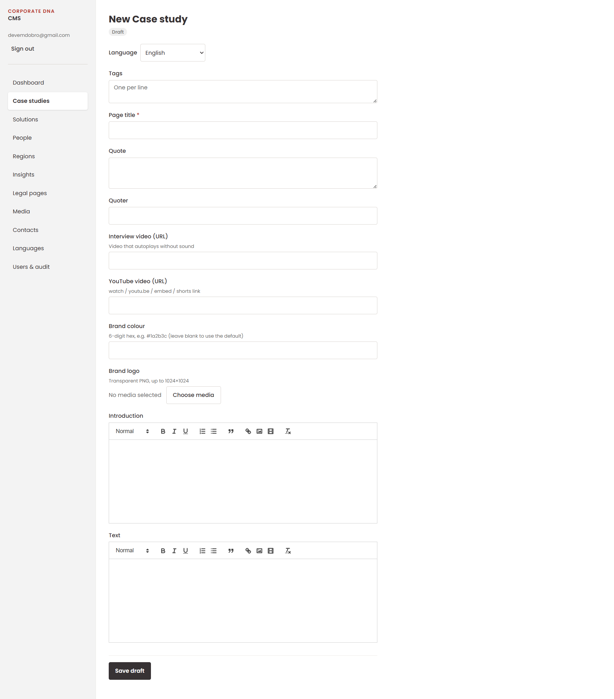
An Insights (or Case studies) list showing the columns Title · Languages · Updated · Actions and the New button top-right.
Step 2 — (If multiple languages exist) choose a language
On a brand-new entry a Language dropdown may appear at the top. Pick the language you're writing in (usually the default). You only see this when more than one language is set up.
Step 3 — Fill in the fields
Fill in the fields. Required fields are marked with a red asterisk *. A status badge near the title shows Draft or Published, and “Unsaved changes” appears while you type.
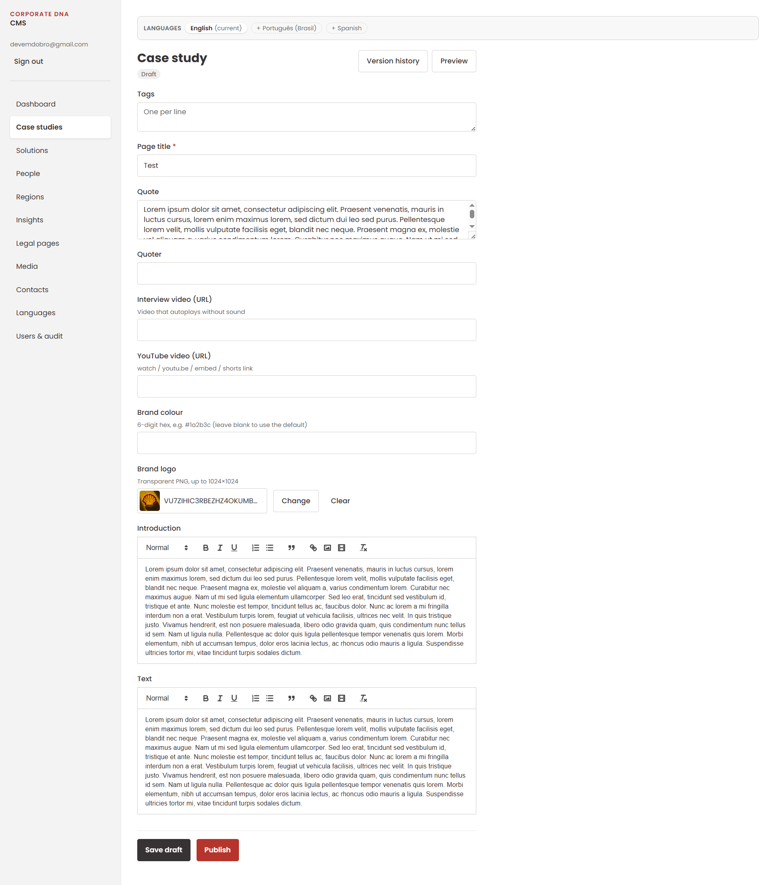
A content edit screen: the title heading, the status badge, several fields (including a required one with a red *), and the sticky bottom action bar with Save draft and Publish.
Auto-save. The CMS quietly saves your draft about 10 seconds after you stop typing, and whenever you click out of a field. Still click Save draft yourself before leaving, just to be safe.
Step 4 — Save your draft
Click Save draft (bottom bar). This stores your work. It is not on the public website yet — it's private. If anything required is missing, a red summary lists what to fix, with links straight to each field.
Step 5 — Preview (see it before it's live)
Click Preview (top right). A new tab shows the entry exactly as it will appear on the website, including your unpublished draft. The link is private. Note: some types (People, Regions) have no standalone page, so Preview won't appear for them.
Step 6 — Publish (make it live)
When you're happy, click Publish. Your content goes live within moments. Publishing is blocked if a required field is empty or a chosen image was deleted — the error names exactly what to fix (e.g. “Can't publish. Please fix: Title, Body.”).
After publishing: making further edits
Once something is published and you edit it again:
- You'll see an ⚠ Unpublished changes badge and a note: “the site still shows the last published version.”
- Your edits are saved privately as a draft. When ready, click Publish changes to push them live.
- A green ● Live badge means what you see is exactly what the public sees.
To take something offline, click Unpublish — it returns to draft and disappears from the public site (kept, not deleted).
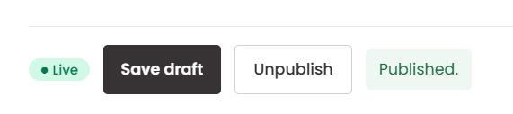
The bottom action bar of a published entry with pending edits — the ⚠ Unpublished changes badge, Save draft, Publish changes and Unpublish buttons, plus the amber “You have unpublished changes…” note.
8Understanding every field type
The edit form is built from a handful of field types. Here's how to use each one.
| Field type | Looks like | How to use it |
|---|
| Text | A single-line box. | Type a short line (a title, a name, a role). |
| Text area | A bigger multi-line box. | Type a longer plain paragraph (e.g. a quote). |
| Rich text | A box with a formatting toolbar. | Format text, add lists, links, images and YouTube videos (Section 9). |
| URL | A single-line box. | Paste a full web address, e.g. https://… |
| Email | A single-line box. | Type an email address. |
| Date | A date picker. | Click and choose a date from the calendar. |
| Media | A thumbnail + Choose media button. | Pick or upload an image / file (Section 10). |
| List (one per line) | A multi-line box. | Type one item per line (tags, address lines). Each line becomes a separate item. |
| Facets (cases only) | Four small boxes: industry / service / region / outcome. | Type comma-separated values in each, e.g. Finance, Retail. They power the site's filters. |
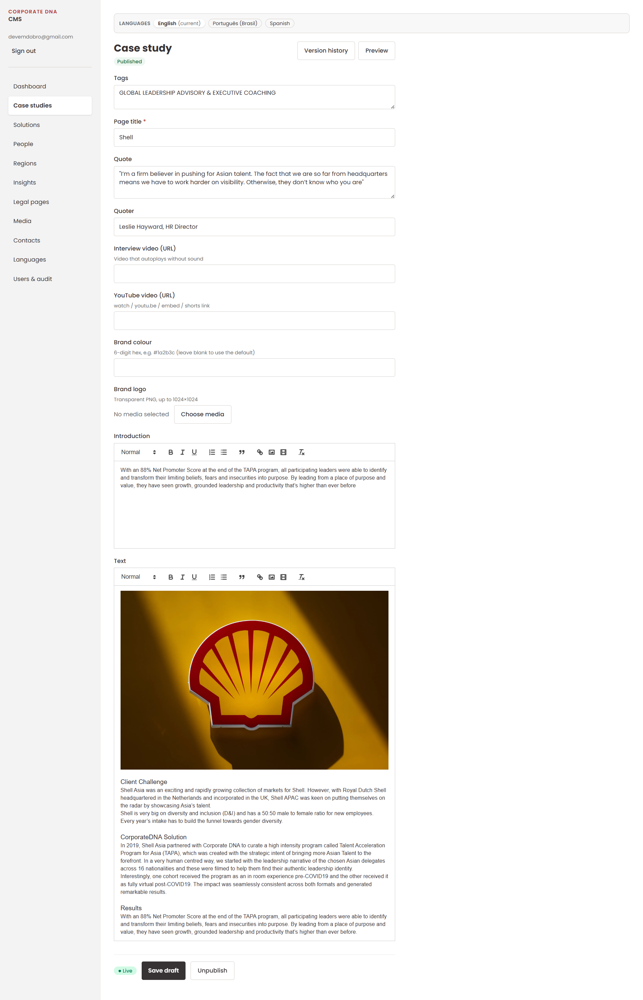
A form area with a text field, a rich-text field, a media field, and the four facet boxes visible at once (a Case study edit screen works well).
9Writing with the rich-text editor
Rich-text fields (a Case's Text, an Insight's Body, a Person's Bio) have a toolbar for formatting.
| Button | What it does |
|---|
| Heading (H2 / H3 / Normal) | Turn a line into a section heading, or back to normal text. |
| Bold / Italic / Underline | Emphasise selected text. |
| Ordered / Bullet list | Numbered or bulleted lists. |
| Blockquote | Indent a quotation. |
| Link | Turn selected text into a clickable link. |
| Image | Upload a picture into the text. |
| Video | Embed a YouTube video. |
| Clean | Remove formatting from the selected text. |
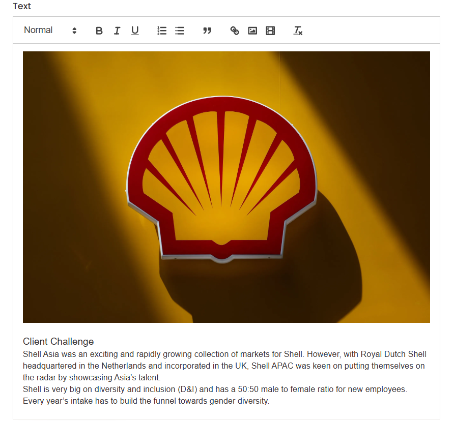
A rich-text field with its toolbar visible — ideally with a heading, a bullet list, and an embedded image inside the text area.
Adding an image inside text
- Click the image button in the toolbar.
- Choose a file. It uploads automatically and appears in the text (never pasted raw).
Adding a YouTube video inside text
- Click the video button.
- Paste a YouTube URL when asked (watch, youtu.be, embed, or shorts all work).
- Only YouTube links are accepted — anything else is rejected.
Removing an image or video
Hover over the image/video inside the editor. A red × button appears in its corner — click it to remove that image or video.
Pasting always removes formatting. When you paste (from Word, a web page, an email…) it comes in as plain text with no colours, fonts, or hidden styles. This is intentional — it keeps the site consistent. Re-apply bold, headings, etc. with the toolbar afterwards.
10Working with images and files (Media)
Every image on the site lives in the Media library. You can add images two ways.
A) Straight from a field (most common)
When a field is for an image (Cover image, Photo, Brand logo):
- Click Choose media.
- A Media library window opens.
- Click an existing image, or click Upload to add a new one from your computer.
- The window closes and your image is attached. To swap it click Change; to remove it click Clear.
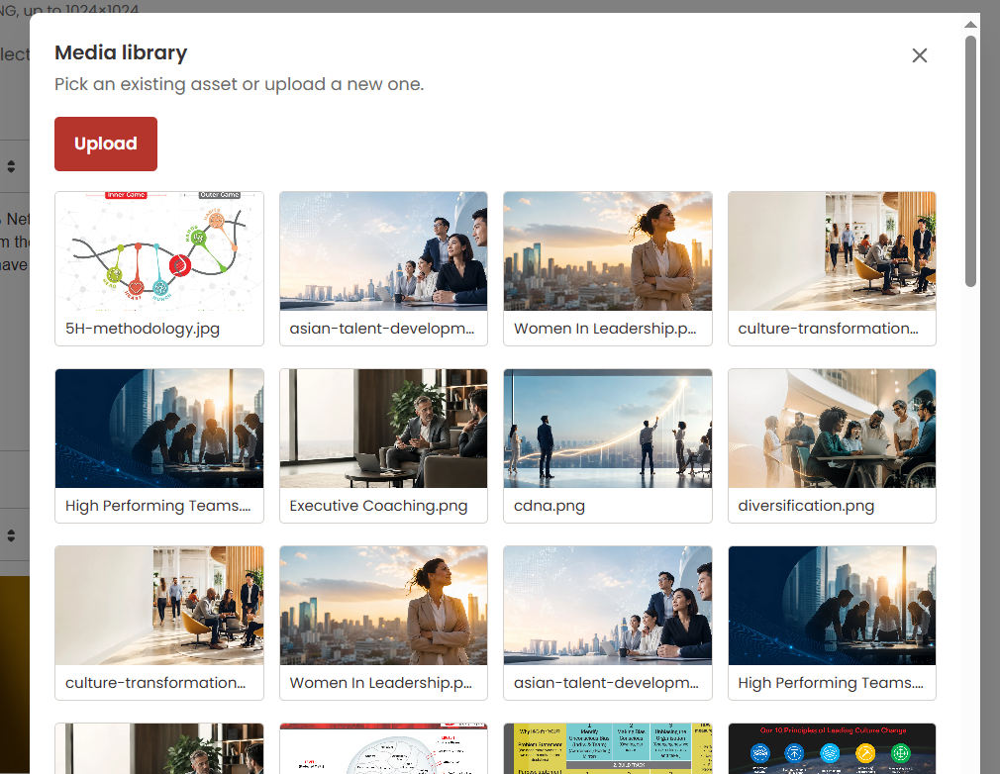
The “Media library” pop-up (opened from a Choose media button): the Upload button at the top and a grid of thumbnails, with one selected (highlighted border).
B) From the Media menu (managing the whole library)
- Click Upload (top right) to add a new file.
- Each item shows its thumbnail, filename, and size. Click a thumbnail to open the full file.
- Click Delete under an item to remove it.
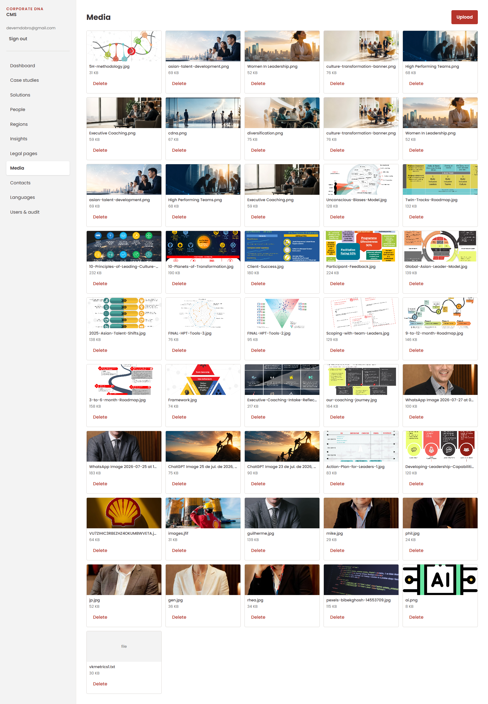
The Media page: the Upload button and the grid of files, each with filename, size, and a Delete button.
Deleting media is permanent. It removes the file for good. If any content still uses that image, it shows a broken image. Make sure nothing needs a file before deleting it.
Rules to remember:
- Videos are not uploaded here. For video, paste a YouTube URL into the video field instead.
- Some fields are stricter — a Brand logo must be a transparent PNG up to 1024×1024. Files that break a rule are rejected with a reason.
- Always use a clear, descriptive filename — it helps everyone find images later.
11Version history: undo and restore
Every time you save, the CMS keeps a snapshot. You can go back to any earlier one.
- On an entry's edit screen, click Version history (top right).
- A panel lists every version with its date and author.
- Click Restore on any earlier version to bring its content back.
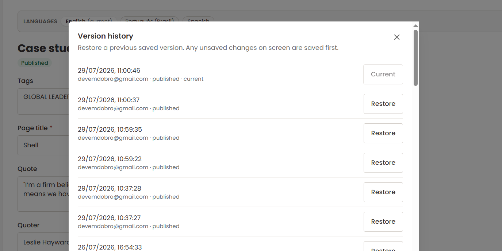
The Version history panel open over an edit screen, listing versions with dates/authors and a Restore button on each.
Restoring is safe. A restore is itself saved as a new version, so you never lose anything — you can even “undo the undo”. Any unsaved edits on screen are saved first before the restore, so nothing is thrown away.
12Deleting content
- Go to the type's list.
- In the Actions column of the row, click Delete.
- A confirmation box explains what will happen. Confirm to proceed.
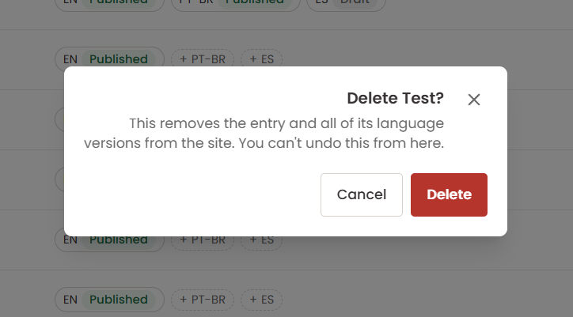
The delete confirmation dialog (“Delete …? This removes the entry and all of its language versions from the site.”) with its Delete and cancel buttons.
Delete removes every language version of that entry from the site. To hide something temporarily, Unpublish it instead (Section 7) — that keeps it and lets you bring it back.
13Field reference for each content type
A quick lookup. Required fields are marked ✅ — the entry can't be published without them.
Case studies
| Field | Type | Required | Notes |
|---|
| Tags | List | | Keywords for the case. |
| Page title | Text | ✅ | The case title. |
| Quote | Text area | | A client quote. |
| Quoter | Text | | Who said the quote. |
| Interview video (URL) | URL | | Autoplays without sound. |
| YouTube video (URL) | URL | | watch / youtu.be / embed / shorts. |
| Brand colour | Text | | 6-digit hex, e.g. #1a2b3c. Blank = default. |
| Brand logo | Media | | Transparent PNG, up to 1024×1024. |
| Introduction | Rich text | | |
| Text | Rich text | | The main body. |
| Facets | Facets | | industry / service / region / outcome — power the filters. |
Solutions
| Field | Type | Required | Notes |
|---|
| Title | Text | ✅ | |
| Banner background image | Media | | Background image for the banner. |
| Problem statement | Rich text | ✅ | |
| Body | Rich text | | |
People
| Field | Type | Required | Notes |
|---|
| Name | Text | ✅ | |
| Role | Text | ✅ | Job title. |
| Bio | Rich text | ✅ | |
| Photo | Media | | Profile photo. |
| Region slug | Text | | Links the person to a region. |
| LinkedIn / Instagram / Facebook / X | URL | | Social profile links. |
| Email | Email | | |
Regions
Each region is a point on the home-page world map — add one per region you want shown there.
| Field | Type | Required | Notes |
|---|
| Name | Text | ✅ | |
| City | Text | ✅ | |
| Country | Text | | |
| Summary | Rich text | | |
| Address lines | List | | One address line per line. |
Insights
| Field | Type | Required | Notes |
|---|
| Tags | List | | |
| Title | Text | ✅ | |
| Author | Text | | Shown as “By …” on the insight. |
| Excerpt | Rich text | | Short summary. |
| Body | Rich text | ✅ | The article. |
| Cover image | Media | | |
| YouTube video (URL) | URL | | |
| Published date | Date | | |
14Ordering People (drag and drop)
The People list is special: the order you set here is the order visitors see on the site.
- Open People.
- Grab a row and drag it up or down to reorder.
- The new order saves automatically.
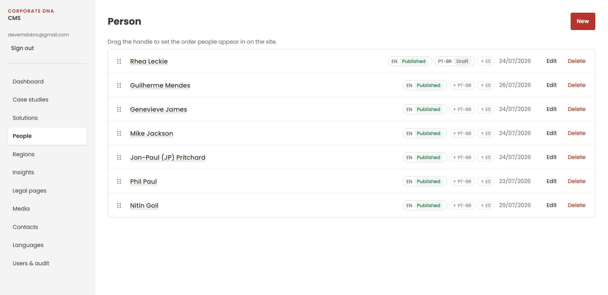
The People list in its drag-and-drop form, ideally mid-drag with a row lifted.
15Legal pages
The Legal pages are “single” pages — each exists only once, so you edit that one entry and never create new ones.
- Click Legal pages in the menu.
- You'll see three cards: Privacy, Cookies, and Terms.
- Click one to edit it. Each has a Title ✅ and a Body ✅ (rich text).
They use the same Save draft → Preview → Publish workflow as everything else.
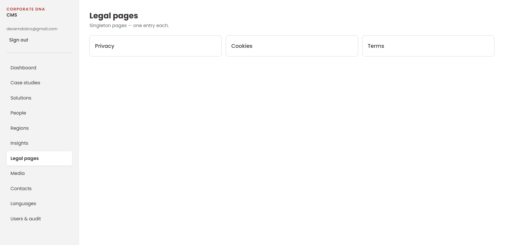
The “Legal pages” screen with the Privacy, Cookies, and Terms cards.
16Working in more than one language
The site can hold the same content in several languages. Each entry is one language; “translations” are linked copies in other languages.
Where you see languages
- In a list, the Languages column shows a chip per language with a Draft/Published badge. A dashed + [Language] chip means that translation doesn't exist yet — click it to create it.
- On an edit screen, a Languages bar at the top shows every language. The current one is marked (current); click another to switch, or click a dashed language to create that translation.
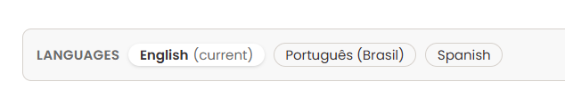
An edit screen's top “Languages” bar: the current language marked “(current)”, one other existing language, and a dashed “+ language” chip to create a new translation.
Creating a translation
- Click the dashed + [Language] chip (in the list or on the edit screen).
- A new entry opens in that language, pre-filled from the source — you translate over the existing text.
- Save, preview, and publish it just like any other entry.
If a language isn't offered, an admin needs to add it first — see Section 20.
17Contacts: the contact-form inbox
When someone fills in the contact form on the public marketing site, their message lands here. Everyone (editors and admins) can read these messages — think of it as a shared inbox.
- Click Contacts in the left menu.
- You'll see a table of every submission, newest first, with a count of messages at the top.
| Column | What it shows |
|---|
| Name | Who sent the message. |
| Email | Their email — click it to reply straight from your email app. |
| Organisation | Their company, if they gave one (otherwise “—”). |
| Received | The date and time it arrived. |
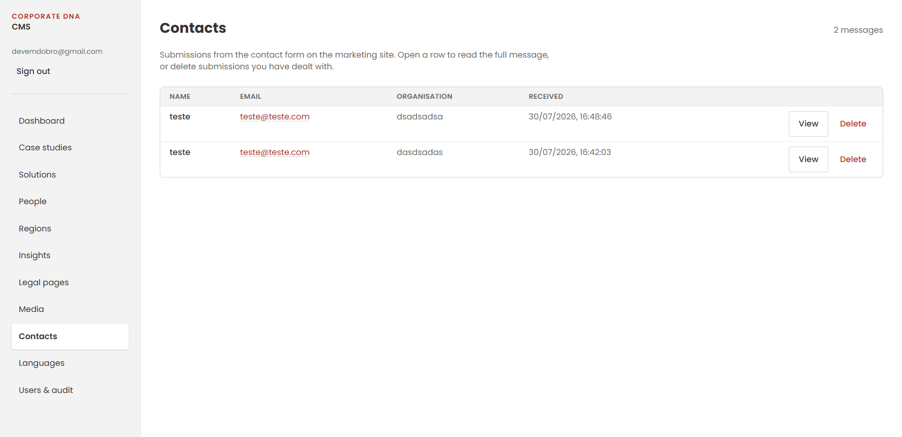
The “Contacts” screen: the message count at the top and the table (Name · Email · Organisation · Received) with View and Delete buttons on each row.
Reading a full message
Click View on a row to expand it. You'll see the full Message, plus technical details: Source, Referer, and User agent (where the message came from). Click Hide to collapse it again.
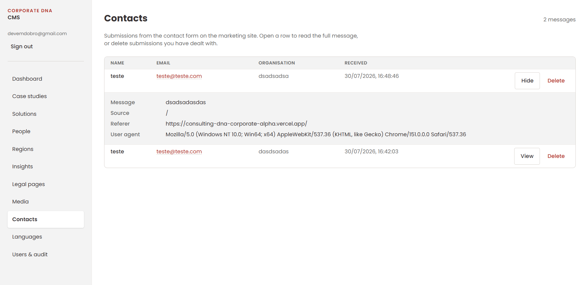
A contact row expanded to show the full Message, Source, Referer, and User agent details.
Replying and clearing messages
- To reply: click the person's email address — your email app opens with a new message to them. (Replies happen in your own email, not inside the CMS.)
- To clear one you've handled: click Delete and confirm.
Delete is permanent. A deleted contact submission cannot be recovered. Only delete messages you've already dealt with.
Contacts are read-only records — you can't create or edit them here. You only read them, reply by email, and delete the ones you're done with. If the list is empty you'll see “No contact submissions yet.”
18Managing users 🔑 Admin only
Only admins see Users & audit in the menu. This is where you invite teammates and control access.
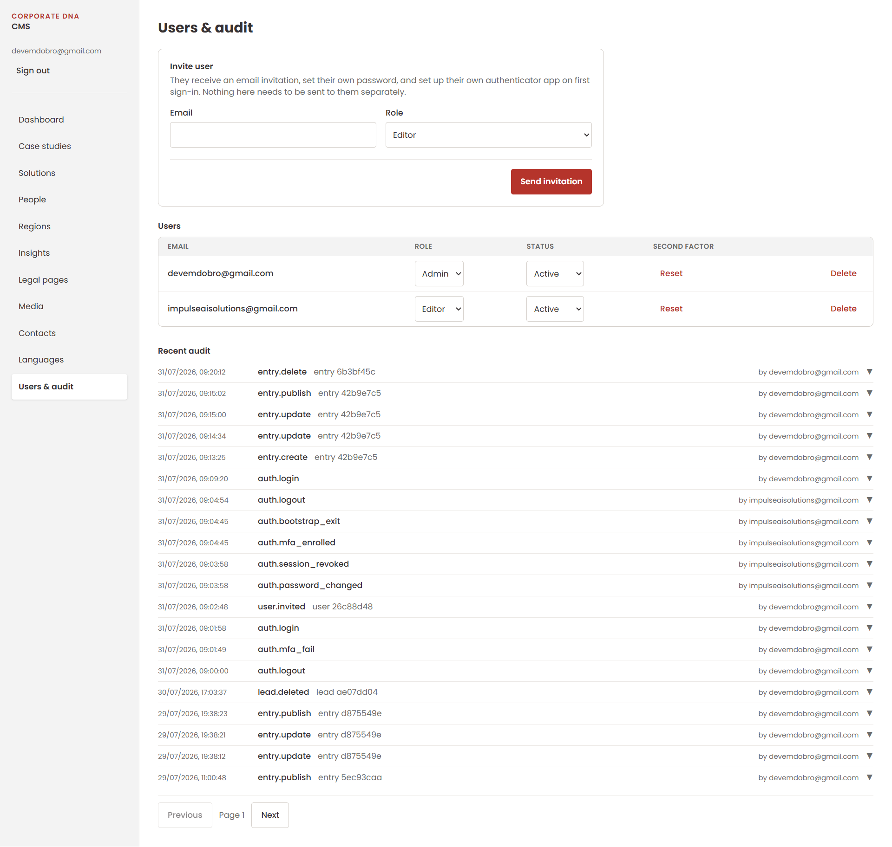
The “Users & audit” screen: the Invite user form at the top and the users table (Email · Role · Status · Second factor · Delete) below.
Inviting a new user
- In the Invite user box, type their Email.
- Choose a Role — Editor or Admin.
- Click Send invitation.
They receive an email, set their own password, and set up their own authenticator app on first sign-in. You never handle their password or codes — there's nothing to send separately.
Changing a user's role or access
| Column | What it does |
|---|
| Role | Switch between Editor and Admin. You'll confirm — admins can manage users and see the audit log. |
| Status | Active (normal), Invited (hasn't finished setup), or Disabled. Disabling signs the person out and blocks sign-in until re-enabled. |
| Second factor → Reset | Use when someone loses their phone. Their old authenticator stops working immediately; they set up a new one on next sign-in. |
| Delete | Permanently removes the account. Their authored content and the audit trail are kept, with the author left blank. |
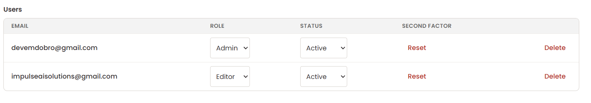
A close-up of one user row: the Role dropdown, Status dropdown, the Reset button, and the Delete button. Optionally include a confirmation dialog.
Safety rule you can't override: the system refuses to demote, disable, or delete the last active admin. This stops anyone locking the whole team out. Always keep at least two admins.
19The audit log 🔑 Admin only
At the bottom of Users & audit is the Recent audit log — an automatic, permanent record of every important action (who did what, and when).
- Each line shows the time, the action, the target, and who did it.
- Click a line to expand it and see full details.
- Use Previous / Next to page through history.
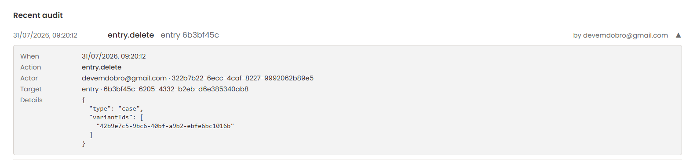
The “Recent audit” list with one entry expanded to show its When / Action / Actor / Target / Details, plus the Previous/Next pager.
The audit log can't be edited or erased, and it survives even if a user is deleted (their email is kept as a snapshot). It answers “who changed this?” with certainty.
20Managing languages 🔑 Admin only
Only admins see Languages in the menu. This controls which languages editors can write in.
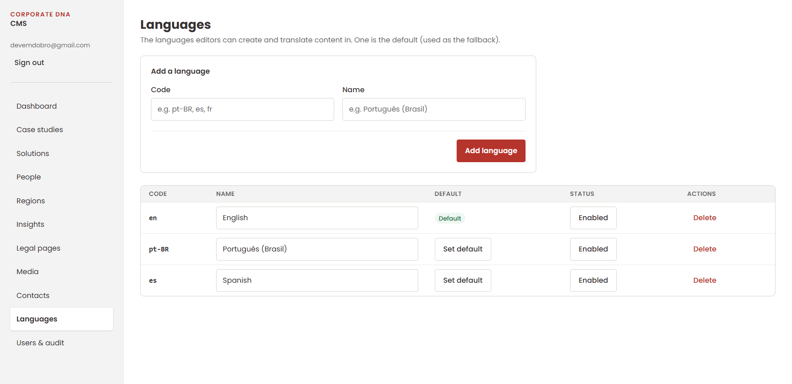
The Languages screen: the Add a language form and the table (Code · Name · Default · Status · Actions).
Adding a language
- In Add a language, type a Code (e.g.
pt-BR, es, fr) and a Name (e.g. Português (Brasil)).
- Click Add language.
Managing existing languages
| Column | What it does |
|---|
| Name | Click the name to edit it, then click away to save the rename. |
| Default | The default is the fallback shown when a translation is missing. Click Set default on another language to change it (it must be enabled first). |
| Status | Click Enabled / Disabled to toggle. Disabled languages disappear from editors' choices but keep their content. |
| Delete | Removes a language from the registry. Only languages with no content can be deleted — otherwise disable it instead. |
Adding or enabling a language makes it appear immediately for editors — no rebuild or developer needed.
21Troubleshooting & FAQ
“I published but the website hasn't changed.”
Give it a moment and refresh the public page. Publishing triggers an automatic update. If it still doesn't show after a few minutes, tell an admin (it may be a webhook/config issue, not something you did).
“I can't publish — there's a red error.”
A required field is empty, or an image you chose was deleted. The message names exactly what to fix. Correct those fields and click Publish again.
“It says ‘Someone else saved this entry while you were editing.’”
Two people edited the same entry at once. Reload to get their changes, then re-apply yours. To avoid this, coordinate who edits what.
“My formatting disappeared when I pasted.”
That's on purpose — pasting always drops formatting. Re-apply bold, headings, and lists with the toolbar.
“The Preview button isn't there.”
Some types (People, Regions) have no standalone public page, so there's nothing to preview.
“I don't see Users & audit or Languages.”
Those are admin-only. If you need something there, ask an admin.
“I lost my phone / can't get a code.”
Ask an admin to Reset your second factor. You'll set up a new authenticator on next sign-in.
“Rate-limited when entering my code.”
The limit is shared across the office network (15 attempts/hour). Wait rather than retrying.
“I deleted something by mistake.”
For a whole entry: contact an admin — deletion is hard to reverse. For content inside an entry, use Version history → Restore. For media, a deleted file is gone; re-upload it.
22Golden rules — one-page cheat sheet
- 🔑 Sign in = password + 6-digit code. Keep your authenticator app safe.
- 📝 Draft is private. Publish makes it live. Preview before you publish.
- ✅ Red * = required. You can't publish until required fields are filled.
- 🖼️ Add images via the field or Media library. Videos = paste a YouTube link, never upload.
- 🧹 Pasting removes formatting — re-apply it with the toolbar.
- 🕓 Every save is a version. Made a mistake? Version history → Restore.
- 🗑️ Delete is forever and removes all languages. To hide temporarily, Unpublish instead.
- 🌍 Translations start pre-filled from the source — translate over the text.
- 👥 Admins: always keep at least two admins; the system won't let you remove the last one.
- ❓ Unsure? Preview first, and ask an admin before deleting anything.
You're ready. Sign in, open a type, click New, and try the full Save draft → Preview → Publish loop on a test entry — it's the safest way to learn.
Corporate DNA ●
CMS User Manual · Complete edition for Editors & Admins